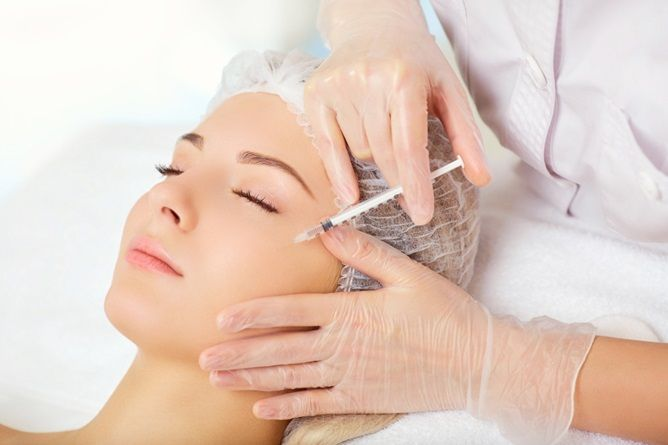
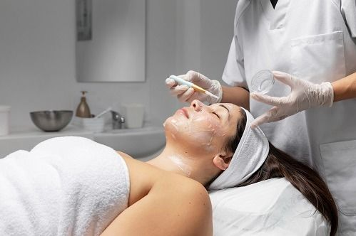
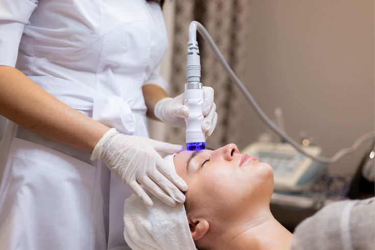
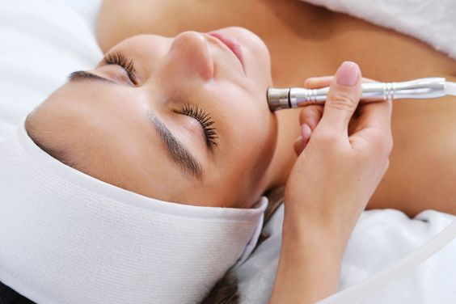

Cosmetic Dermatology Services
Botox and Dermal Fillers 
Botox and dermal fillers are among the cosmetic dermatology therapies that our dermatology clinic specializes in providing. We provide individualized consultations to fully understand the objectives and concerns of each patient, and our team of highly qualified dermatologists specializes in aesthetic treatments. Dermal fillers are used to restore volume, smooth lines, and enhance facial features, whereas Botox treatments are used to soften dynamic wrinkles created by facial expressions, such as crow's feet and forehead lines. Our innovative injectable procedures and FDA-approved materials guarantee natural-looking outcomes with minimal discomfort and recovery time. Our primary goals are patient safety and satisfaction, and we work hard to deliver all-encompassing therapy that improves facial aesthetics and increases self-confidence.
Chemical Peels 
We provide expert chemical peel treatments at our dermatology clinic that are designed to improve and revitalize skin health. To treat a range of skin issues like fine lines, wrinkles, uneven pigmentation, acne scars, and sun damage, our skilled doctors use chemical peels of the superficial, medium, and deep varieties. We evaluate each patient's skin type and issues during individual consultations in order to suggest the best peel composition and intensity. To achieve smoother, more radiant skin, chemical peels exfoliate the skin's outer layer, encourage cell turnover, and boost the creation of collagen. We put the safety and comfort of our patients first, which is why we use exact application methods, in-depth pre-peel exams, and post-treatment care guidelines. Our clinic is dedicated to accomplishing your goals, whether it is to treat particular skin disorders or revitalize a dull complexion.
Laser Treatment 
Our dermatology clinic specializes in cutting-edge laser procedures designed to accurately and effectively treat a variety of dermatological issues. Modern laser technology is used by our skilled physicians to treat a range of skin ailments, such as vascular lesions, pigmentation problems, acne scars, and unwanted hair. Every treatment is customized to the patient's unique requirements and skin type, guaranteeing the best possible outcomes with the least amount of discomfort. Our clinic provides complete care in a secure and friendly setting, whether it is for vascular laser therapy to treat visible blood vessels or rosacea, fractional laser resurfacing to improve skin texture, or laser hair removal for permanent hair reduction. Prioritizing patient education, we offer thorough consultations and direction during the course of therapy to guarantee patient pleasure and long-term skin health.
Microsdermabrasion 
We provide expert microdermabrasion treatments at our dermatology clinic with the goal of revitalizing and refreshing the skin. A non-invasive exfoliating method called microdermabrasion gently eliminates the outer layer of dead skin cells to reveal softer, more radiant skin beneath. Our knowledgeable dermatologists polish and improve the texture of the skin using a diamond-tipped brush or a portable gadget filled with tiny crystals. Sun damage, uneven pigmentation, moderate acne scars, and fine wrinkles can all be effectively reduced with this therapy. Additionally, it promotes the formation of collagen, which eventually results in firmer, younger-looking skin. We tailor each treatment to the individual's skin type and issues in order to provide the best possible outcome and a comfortable experience. Our clinic places a high priority on patient safety and satisfaction, offering thorough consultations as well as advice for after-treatment maintenance to preserve skin health.
A video about Microsdermabrasion